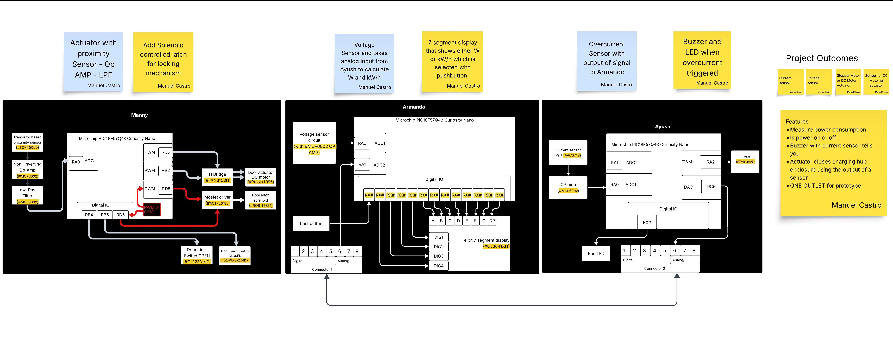
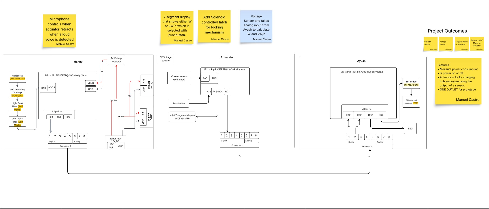
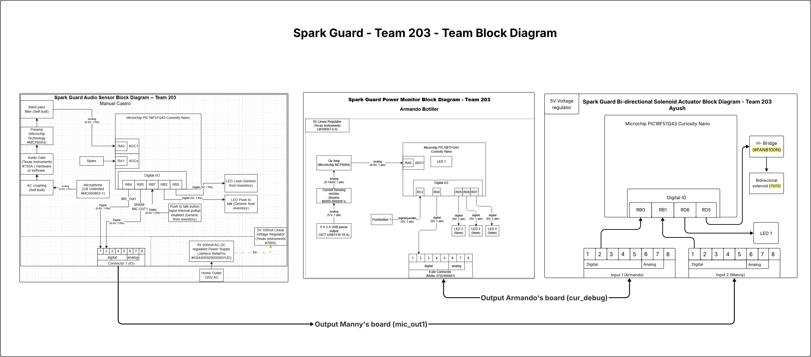
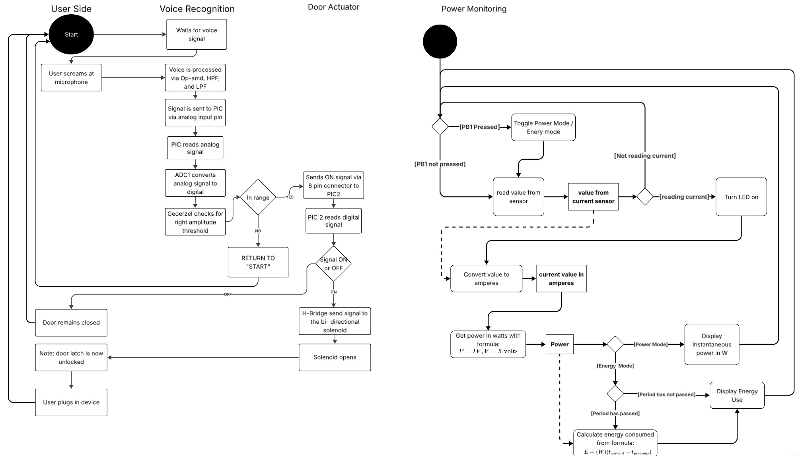
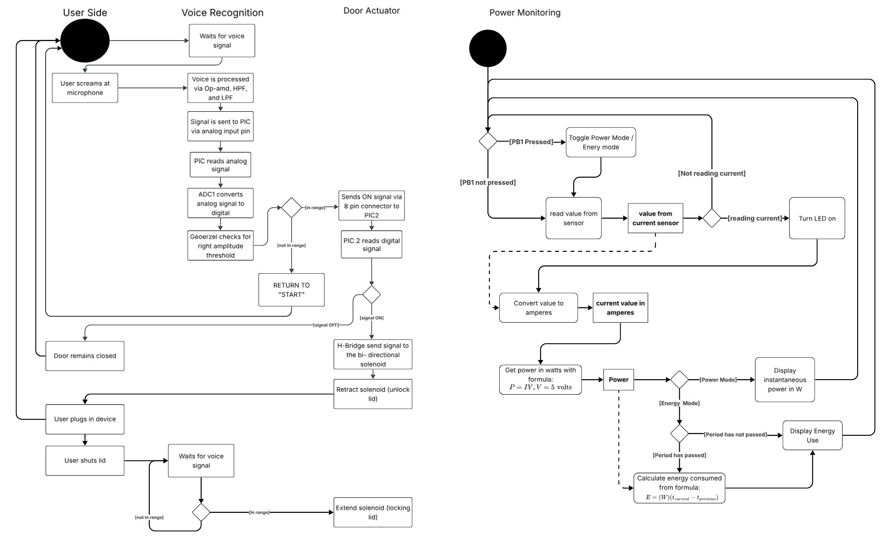

Old Content Archive
First Draft

{kind=link}
Notes from this iteration:
1. We didn't realize our boards all needed to communicate to at least one other board.
2. Manny's board was initially planned to include a motor with a door latch solenoid, plus limit switches to determine when the door was open or closed.
3. We believed it necessary to have both a voltage sensor and a current sensor.

{kind=link}

{kind=link}
Software Diagram

Figure 1: Software proposal logic diagram
{kind=link}

We felt that an updated diagram was warranted since our team felt that the logic did not have an end as it is always running in a continuous repeating loop that is checking to see if the required conditions are met to take action.
{kind=link}
Product Requirements (Old)
Project Objective
This project aims to investigate and develop a highly versatile smart power strip with an improved setup, more reliable interface, easy to program outlets and USB ports, for use in a wide range of electrical applications indoors as well as out. The outcome of this investigation and the prototype that will be created will benefit the industry as a whole, as we are posting all documentation, electrical schematics, code, and CAD files to our github page which is freely viewable and downloadable. We believe that by providing this research as a public resource it will benefit fellow ASU students taking EGR304 or similar embedded systems classes by providing an example of a project that can serve as inspiration. And, since we are developing a real product it will benefit entrepreneurs or engineering firms looking to actually sell a product like the one we design.
Aspects
- Customization
- 4.1 The product shall allow the user to use multiple control methods and be able to program the device by editing the code we develop to run customized routines.
- 4.2 The product shall allow the user to customize power output from each plug and USB port.
-
4.3 The design is to be modular with the user customizing the location and type of each port.
-
Manufacturing
- 5.1 The product shall be easy to manufacture.
- 5.2 The product exterior should be manufactured with materials resistant to elements and use weather resistant mechanical components such as switches and plug covers.
- 5.3 Plastic exterior should be biodegradable and/or recyclable.
-
5.4 The PIC Curiosity Nano microcontrollers used in the design shall be easily removable from the device for use in other projects.
-
Safety
- 6.1 Product shall protect against overcurrent.
- 6.2 Product shall protect against short circuits.
- 6.3 Product shall filter the current to prevent spikes that may damage electrical components.
- 6.4 Product automatically limits current to what each port can deliver.
- 6.5 Product dissipates heat so it does not become a fire hazard with high current usage.
Requirement Criteria Specifications
- 4.1.1 Device supports three control interfaces: physical buttons with a screen to display information, mobile app, and web interface.
- 4.1.2 Device has a port for reprogramming.
- 4.1.3 Source code is accessible for reprogramming.
- 4.2.1 Power settings for each plug and USB-port can be specified with the control interface.
- 4.2.2 Device provides real time feedback for desired output and delivers within +-5% of what was specified.
- 4.3.1 Ports are mounted on interchangable modules with standardized connectors.
-
4.3.2 User can rearrange or swap out port types to design their own array of power sources.
-
5.1.1 Material besides internal PCB and Curiosity Nano controllers is sourced from at least two different materials in case of unavailability.
- 5.1.2 There are at least two ways to manufacture the outer shell of the assembly, e.g. 3D printing or injection molding.
- 5.1.3 Assembly time is under 30 minutes using basic hand tools.
- 5.2.1 Enclosure meets IP65 rating for dust and water resistance while components are plugged in.
- 5.2.2 Enclosure must pass 10 simulated outdoor durability tests, including being sprayed with water, shaken around in a container of dust, and a drop from shoulder height while components are plugged in (specific moisture level and particulate level to pass TBD).
- 5.3.1 Outer shell assembly is made from biodegradable or recyclable plastic.
-
5.4 PIC Curiosity Nanos are mounted on headers allowing removal/replacement in under 2 minutes without soldering.
-
6.1.1 Device includes automatic shutoff when current exceeds rated current(TBD); recovery requires manual reset.
- 6.2.1 IEC 62368-1 compliant.
- 6.3.1 Includes EMI filters and transient voltage suppressors that reduce spikes to below 5% of rated current (TBD), verified via oscilloscope.
- 6.5.1 Product operates between 32 - 122 degrees F
- 6.5.2 Product does not exceed 122 degrees F during intended use.
- 6.5.3 On board temperature sensor automatically shuts off device if temperature exceeds 122 F.
Open Questions
- Can we manufacture this product for under $100?
- Can we find a safe way to merge high amperage needs with low?
- What type of interface would be the most marketable based on the requirement of reliable connectivity as well as convenience?: a remote, smartphone app, connected touch screen, etc.
- How do we achieve full dust and water protection when elements are plugged in, thus exposing some amount of the plug or USB port?